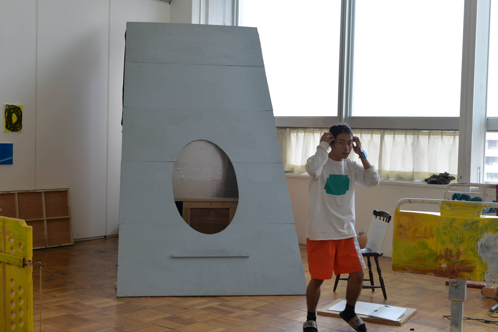
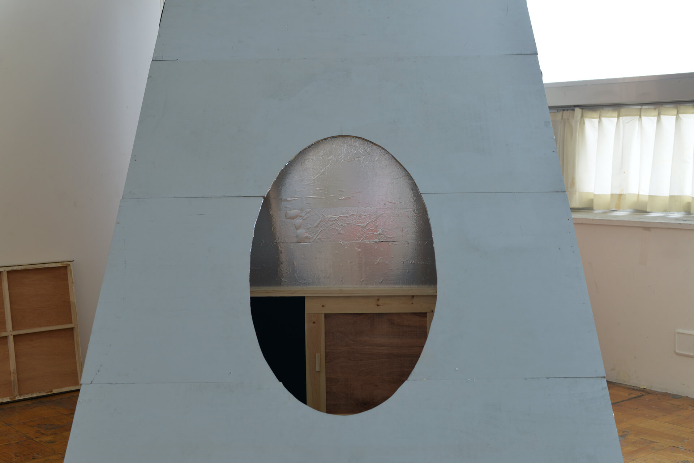
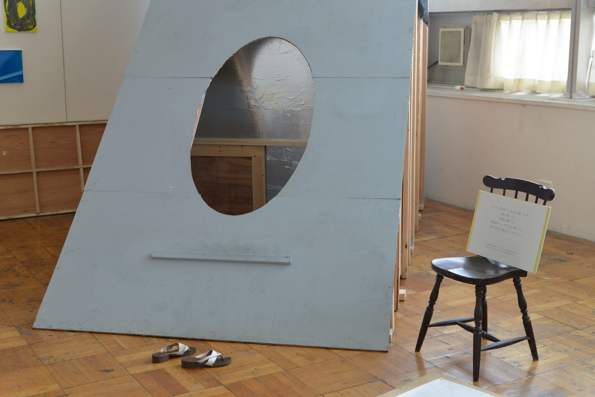
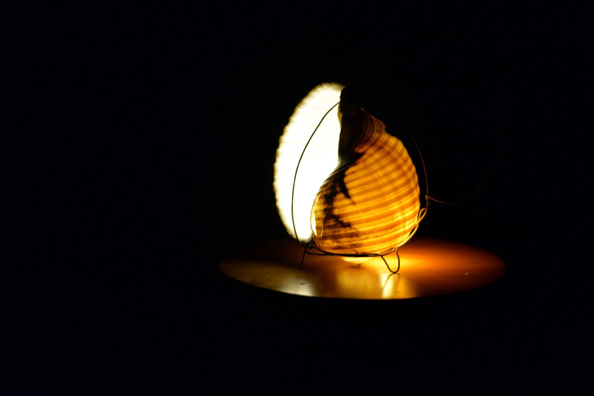
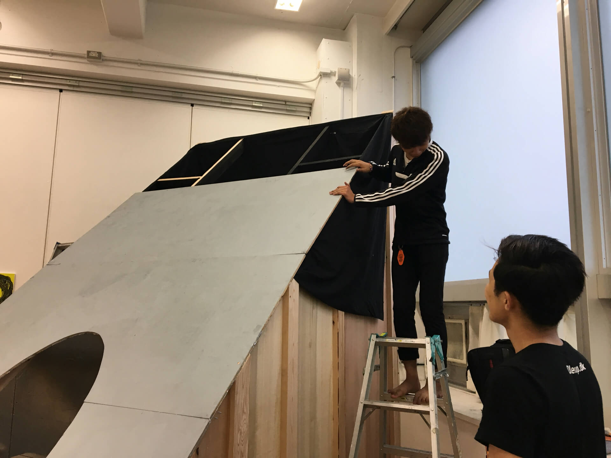
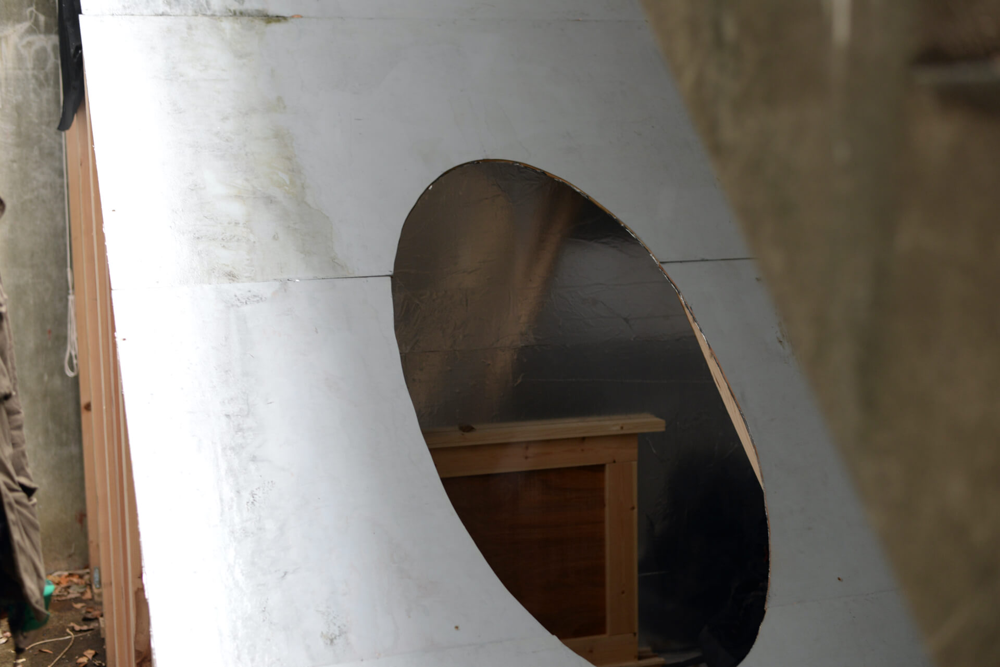
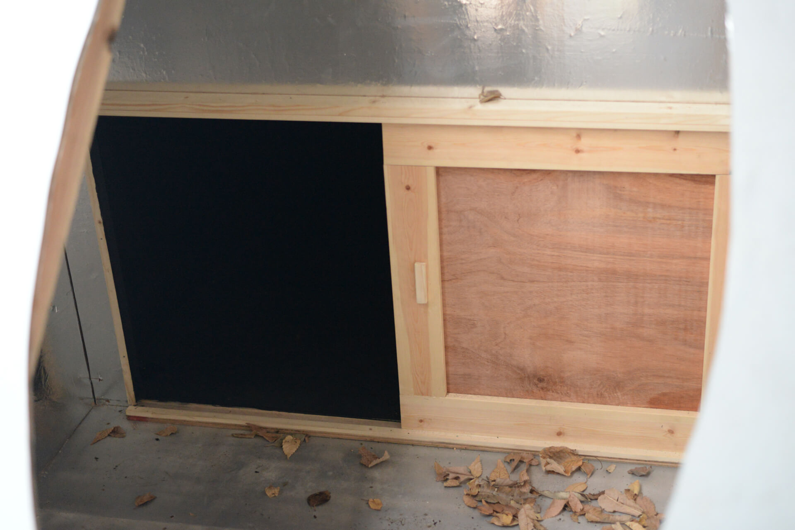
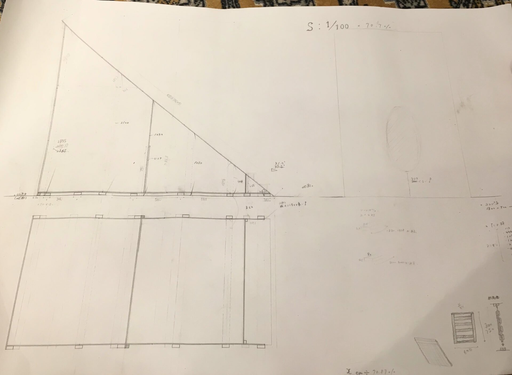

日本人風之図/Japanese like faces
Yuto Hayashi
2017
material : wood, the second most black color
cooperator : Kosei
Yamashita in architecture department of Waseda University
exhibited in school festival of TUA in 2017
reference : Anish Kapoor’s works
高さ3mほどの人の入れる空間を作り、貝のランプを持って 入れるように開放しました。現代の茶室を目指し、2人で話し合うための、非日常的な暗闇の空間を制作しました。
この作品は瀬戸内を旅していた時に出会った早稲田大学建築科の学生との共同企画です。彼は茶室などの建築的アイデアを持ち込み、わたしはリレーショナルアートの文脈で作品制作を考えました。
-
This is an about 3 meters high hut to get into with holding a shell lamp and it opened in an exhibition.
I aimed for a Japanese tea room, Chashitsu of today. There is a n unusual darkness inside and a viewer
can talk with his or her close person.
This project is a cooperated work with a student studying architecture in Waseda university. He
suggested ideas of architecture such as Chashitsu, and I suggested the context of relational art.